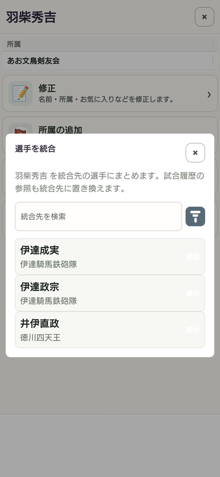

14 / 整理する
重複した選手・所属をまとめる
同一人物として登録した「真田信繁」と「真田幸村」をまとめる説明例です。
操作の入口選手 → 統合元の選手 → 統合
まとめる元の選手を開く
この例では「真田信繁」を開き、「統合」を押します。
残す選手を探す
統合先として「真田幸村」を検索します。両者を同一人物として扱う登録であること、所属が正しいことを確認します。
最終確認で向きを見る
「真田信繁」から「真田幸村」へ、という向きを確認して「統合する」を押します。迷ったらキャンセルします。
履歴と統計を確認する
統合元の試合履歴の参照が統合先へまとまります。重複が解消し、目的の選手で記録を見られるか確認します。

